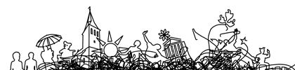

LIBER 41st Annual Conference
27-30 June 2012,Tartu, Estonia
organized by University of Tartu Library
Home
Registration
Programme
Liber Awards
Sponsors
Transport
Accommodation
Venue
View LIBER 2012 Venues in a larger map
Conferents Contacts
liber2012@utlib.ee
Guestbook
Photos